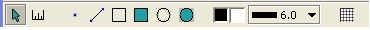

MapTool Documentation
Anatomy
 The maptool screen comes up with four sections. Along the top is the toolbar.
Along the left side is an Asset panel which shows you directories of images you might load to drag onto maptool as tokens.
Along the bottom is your Zone panel showing maps that the server has loaded.
Then the rest of the screen is taken up by your current map (highlighted in the zone panel).
The maptool screen comes up with four sections. Along the top is the toolbar.
Along the left side is an Asset panel which shows you directories of images you might load to drag onto maptool as tokens.
Along the bottom is your Zone panel showing maps that the server has loaded.
Then the rest of the screen is taken up by your current map (highlighted in the zone panel).
The Zone and Asset panels can be hidden using the View menu (or the keyboard shortcuts Z and A respectively).
Adding Maps
Adding maps can be done in three different ways. The first is to choose
File->Create Indefinite Map. This creates a tiled background (the green grassy
looking background in the screenshot) on which you can use the drawtools to
create your map.
The second way is to File->Load a map (Ctrl-L), which will bring up a file dialog for you to find and select an image to load.
The third way is to drag an image from your desktop or the internet onto the Zone panel.
The Tools

The Toolbar contains the following tools.
- Selector/Pointer - use this to select tokens and move them.
- Distance tool - measure the distance between two points.
- pencil drawing tool - mouse drawing
- line drawing tool - straight line(s) between clicks
- rectangle - draw rectangles between two points
- filled rectangle - draw rectangles that have colored fills
- oval - draw ovals (and circles)
- filled oval
- foreground color selector - change the color of lines and shapes
- fill color selector - change the fill color of filled shapes
- line width - draw heavier or lighter lines
- grid on/off - turn the maptool grid on/off
moving tokens
Once tokens are on the map, you can select them with the selector/pointer tool. You can Ctrl-click to select more than one, after which you can move them all
together. Tokens automatically snap to the grid (whether or not it is visible).
measuring distances
The measuring tool works by click-dragging from your start point to a point you want to measure. A line is drawn with the length of the line (in feet, with 1 square == 5') shown.
pencil drawing and erasing
The pencil (or point) tool is unique among the drawing tools. It is the only
one you click-drag to draw. As you draw freehand with the tool you will see
the line. Other clients (and the server) will not see it until you are
finished drawing and release the click. You can use the ESC key to abort the
drawing before releasing.
You can use the pencil to erase by right-click-dragging. The tool will show a white line where you are erasing. The erasure is not complete until you release (which can be aborted by an ESC). Erasing is just another form of drawing to maptool, so it is subject to undo/redo (see undo/redo below).
line drawing
If you like straighter lines, the line drawing tool is for you. Click and
release at the starting point, drag the mouse to the finish and click/release
again. Drawing multiple segments is easy too, Click and release at the
starting point, at waypoints use Right-Click and release. Click and release
again to finish the shape.
The line drawing tool can also be used as an eraser by Right-Click and release to start using the tool. You Click and release to finish, but you can still use Right-Click and release to set waypoints for the "un-line".
rectangles and ovals
The next four tools are all very similar. Select rectangle or oval, filled
or empty. Click and release at one "corner" (for ovals it will be the corner
of an imaginary bounding box), move the mouse to create the shape and Click and
release to finish. ESC will abort the drawing.
The filled tools make great bulk erasers, Right-click and release to start
erasing, a white shape will be drawn to show you where you will erase.
Right-click and release again to finish.
Foreground and Fill colors
The two boxes after the filled oval tool are the foreground and fill colors,
respectively. Clicking on these will bring up a color selection box that will
allow you to change the colors. Initially these will be black and white,
respectively. They will change to reflect the current color choices.
The foreground color is used for the lines -- including the outlines of rectangles and ovals. The fill color is only used on the filled rectangle and filled oval shapes.
The colors are not used if you select a drawing tool to use it to erase.
Line width
The line width changes the foreground line on all the drawing tools.
Show Grid
Maptool can draw a grid for you (or you might wish to have a grid already
in the image you are using for a map). The next button merely shows or hides
this grid. Note that the grid is in use whether it is shown or not. If you do
use a map background with it's own grid, see the Grid section below for how to
align the grid so that tokens line up properly.
You can scale and reposition the grid so that tokens line up with your
gridlines. Just pull down the GM menu to Adjust Grid
and use the mouse-wheel to zoom (change the grid size) the left mouse button to
reposition the grid, and the right mouse button to pan the map. For best
results your grid squares should be perfect squares and all exactly the
same size. Some popular maps on the web are not, and tokens will not line up
perfectly.
Drawing tools do not snap to grid.
undo/redo
maptool keeps track of all your drawing items and you can undo as many as you
need to (use Edit->Undo or Ctrl-Z). You can redo with Ctrl-Y if you undo too
many.
Erase actions (described above under the drawing tools) are also in the undo
stack and get undone/redone along with drawings.
Client/Server
The Server menu has two options - Start Server or Connect to Server. Choose
Start server if you want to host for other people to connect to you. You will
automatically be connected to the new server instance -- so you will be asked
to choose a Username to connect as.
By default maptool listens on port 4444. To allow other people to connect to
you after starting a server you will give them the IP address of your computer
and the port number. Finding your IP address is beyond the scope of this
document (hint: ipconfig /all). Navigating proxies or firewalls is also beyond
the scope of this document.
If you're joining someone else's server, Choose Connect to Server from the
Server menu. When connecting as a client you are asked for your Username, the
IP address, and the port to connect to.
The Indefinite map loads very fast at first -- it is a very small image
repeated over and over again for the background. If you use map images you
create or download, the clients may see a second or two pause while it loads.
The bottom bar of the maptool has a few status indicators. There are two
circles at the far right which will blink with transmit and recieve data. Next
to that is a whirlygig that shows that you're busy with something (such as
downloading maps). And next to that is a memory status indicator.
Panning and Zooming
The View menu has a Zoom submenu that lets you zoom in, out or reset your zoom.
You can also use the mouse-wheel to zoom when you are in the selection tool or
the distance tool.
The zoom keeps your pointer relatively stationary, so wherever you are pointing
should remain under the pointer as you zoom in and out. This lets you zoom
without losing the entire party of one edge.
Panning is done with a Right-click with either the selection tool or the
distance tool. Right click and drag the map to change the portion shown in your view.
Assets and Tokens
Tokens can be added to the map in two ways. By dragging from the asset panel, or by dragging from anywhere else (web browser, windows desktop, etc).
The Assets tab on the Assets panel can be filled with File->Assets->Add Asset
Panel (Ctrl-A). This will open a file selection dialog box. Choose any
directory with images in it and click Open. The directory will be added as a
navigatable tree in the top pane of the Asset panel, selecting a directory
within the asset tree that has images will show the images in the pane below.
Drag from there to the map body to add tokens to the map.
Your asset tab is not shared with other clients. But once you drag the asset onto the map it becomes shared with the other clients. Note that there is currently no way to prevent other clients from moving your assets and vice versa, but something along those lines is planned for a future release.
Don't forget to grab tokentool to help you make tokens for maptool from your favorite art.
 The maptool screen comes up with four sections. Along the top is the toolbar.
Along the left side is an Asset panel which shows you directories of images you might load to drag onto maptool as tokens.
Along the bottom is your Zone panel showing maps that the server has loaded.
Then the rest of the screen is taken up by your current map (highlighted in the zone panel).
The maptool screen comes up with four sections. Along the top is the toolbar.
Along the left side is an Asset panel which shows you directories of images you might load to drag onto maptool as tokens.
Along the bottom is your Zone panel showing maps that the server has loaded.
Then the rest of the screen is taken up by your current map (highlighted in the zone panel).